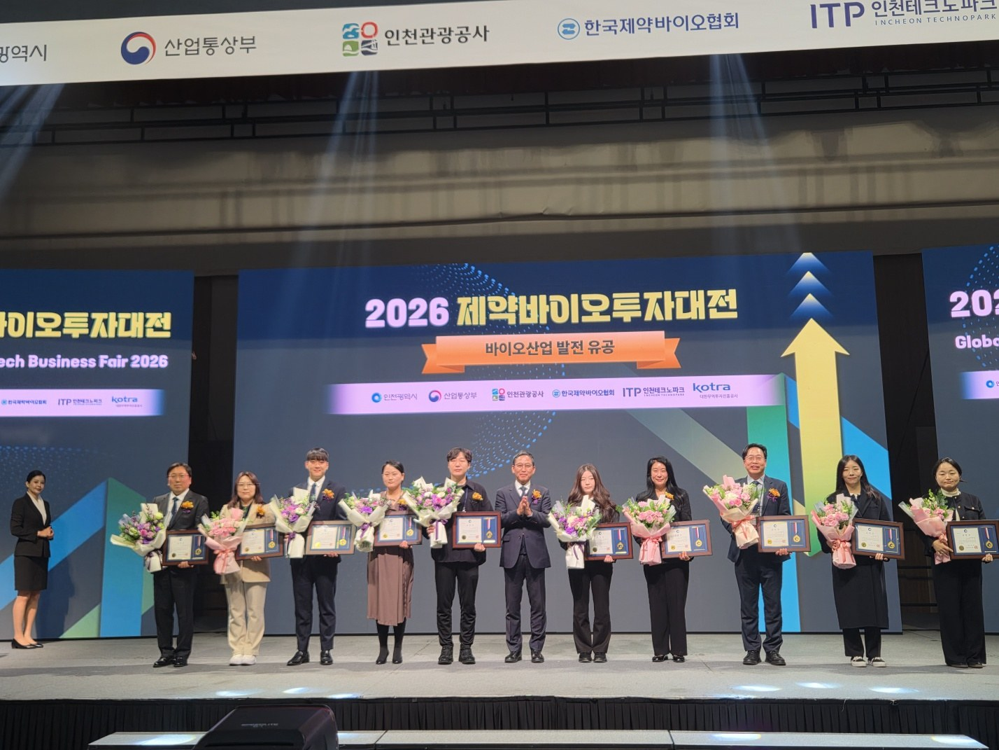
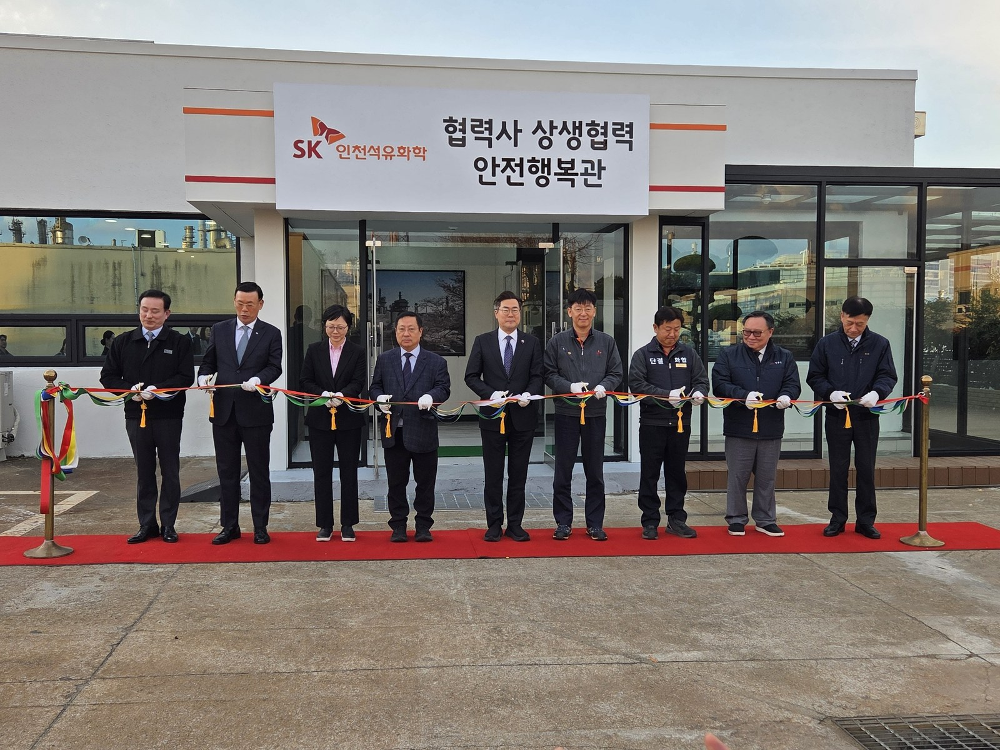

[인천경제&경제사⑦] 경제활성화와 경기활성화, 구조와 흐름의 두 처방
2020년 인천산 의약품의 인천 안 수요 11.1%
AI경제저널=김갑봉 기자 | 2020년 인천에서 만든 의약품 가운데 인천 안에서 쓰이거나 재고로 남은 몫은 11.1%였다. 연구소가 한국은행 2020년 지역산업연관표로 계산한 결과다. 인천 의약품 산출은 3조2871억원이었고, 수출이 44.9%(1조4744억원), 다른 지역으로 간 몫이 44.1%였다. 인천 산업의 중간재로 6.8%, 인천 민간소비로 1.7%가 쓰였고 2.6%는 재고로 쌓였다.
인천 의약품 산업이 인천 산업에서 사 온 원료와 서비스는 산출액의 9.7%였다(연구소 계산). 인천 의약품 생산은 2026년 3분기에 1년 전보다 41.1% 늘었다. 2026년 거래를 담은 지역산업연관표는 나오지 않았다.
1. 경기, 지금의 흐름
필자는 2025년 5월 인천투데이 칼럼에서 경제를 생산과 분배, 소비의 전체 구조로 봤다. 경기는 그 안에서 벌어지는 활동의 흐름으로 봤다. 경기활성화는 침체된 수요를 살리는 단기 처방이고, 경제활성화는 산업구조를 바꾸는 장기 과제라고 구분했다. 이 차이를 모르고 정책을 펴면 약이 독이 될 수 있다고 썼다.
경기종합지수는 국민경제 전체의 경기동향을 파악하려고 만든 지표다. 현재 경기를 나타내는 동행종합지수는 광공업생산지수와 소매판매액지수, 비농림어업취업자수 등 7개 지표로 이뤄진다. 여기서 추세변동분을 뺀 동행지수 순환변동치는 2026년 9월 102.2였다. 2026년 1월 99.1보다 3.1 높았다(연구소 계산).
국가데이터처 3분기 지역경제동향에서 인천 광공업생산은 1년 전보다 9.5% 늘었다. 의약품과 함께 기계·장비수리(149.2%)도 늘었고 기계장비는 26.4% 줄었다. 인천 소매판매는 0.3% 늘었고, 인천 20대 고용률은 2.2%포인트 낮아졌다. 11월 인천 소비자심리지수는 102.8로 두 달 내리 떨어졌다.

2. 경제, 인천에 남은 몫
연구소는 같은 지역산업연관표로 인천 산업끼리 주고받은 거래만 넣어 생산유발계수를 구했다. 인천 의약품에 최종수요 1원이 생기면 그 1원을 포함한 인천 안 생산은 1.123원이다. 다른 지역을 거쳐 인천으로 되돌아오는 효과는 뺀 값이다.
같은 셈법으로 인천 자동차 부품은 1.173원, 반도체는 1.165원, 도소매업은 1.231원이다. 인천 자동차 부품은 산출의 18.3%가 인천 산업의 중간재로 쓰였다. 인천 반도체는 산출의 73.7%, 완성차는 65.2%가 수출이었고, 인천 도소매업은 37.5%가 인천 안 수요로 갔다(연구소 계산).
3. 1998년, 외환위기와 인천
한국 정부는 1997년 12월 3일 국제통화기금(IMF)에 의향서를 내 대기성차관을 요청했다. 국제통화기금은 이튿날 특별인출권 155억, 약 210억달러의 3년짜리 대기성차관을 승인했다. 이 가운데 특별인출권 41억, 약 55억6000만달러는 바로 인출할 수 있었다. 국민계정에서 국내 실질 경제성장률은 1998년 -4.9%였고 1999년 11.6%로 돌아섰다.
경제활동인구조사(구직기간 1주 기준)에서 국내 실업률은 1997년 2.6%에서 1998년 7.0%로 올랐다. 인천 실업률은 같은 기간 3.4%에서 8.4%로 올랐다. 인천 실업자는 3만9000명에서 9만2000명으로 5만3000명 늘었다(연구소 계산).
금융감독위원회는 1998년 6월 29일 동화·동남·대동·충청·경기은행의 경영정상화계획을 승인하지 않았다. 경기은행 본점은 인천 남동구 구월동에 있었다. 경기은행의 자산과 부채는 자산부채이전 방식으로 한미은행에 넘어갔다.
정리해고 제도는 1998년 2월 20일 근로기준법 개정으로 유예가 풀려 바로 시행됐다. 2000년 11월 8일 대우자동차가 최종 부도 처리됐고, 11월 10일 인천지방법원에 법정관리를 신청했다. 회사는 이듬해 2월 16일 정리해고 대상자 1785명에게 해고 통지서를 하나하나 보냈다. 노조는 공장 안에서 농성하며 전면 파업에 들어갔고, 정부는 2월 19일 밤 경찰을 투입했다.
4. 케인즈의 수요와 슘페터의 구조
존 메이너드 케인즈(John Maynard Keynes)는 1936년 『고용, 이자, 화폐의 일반이론』에서 고용을 정하는 것이 사회 전체의 유효수요라고 봤다. 이 분석으로 「풍요 속의 빈곤이라는 역설」을 설명했다. 적극적인 활동의 상당 부분은 수학적 기대보다 자생적 낙관에 기댄다고 적었다. 그런 일을 하려는 결정은 대부분 「야성적 충동」에서 나온다고 봤다.
케인즈는 같은 책 마지막 장에서 완전고용을 이루지 못하는 것과 부와 소득의 자의적이고 불공평한 분배를 당시 경제사회의 큰 결함으로 꼽았다. 그는 국가가 맡을 일이 생산수단의 소유가 아니라고 적었다. 생산수단을 늘리는 데 쓰는 자원의 총량과 그 소유자의 기본 보수율을 정하면 충분하다고 봤다.
요제프 슘페터(Joseph Schumpeter)는 1942년 『자본주의, 사회주의, 민주주의』를 냈다. 그는 자본주의를 움직이는 근본 충동이 새 소비재, 새 생산방법과 운송방법, 새 시장, 새 산업조직에서 나온다고 썼다. 이 과정이 경제구조를 안에서부터 끊임없이 무너뜨리고 새로 만든다고 보고, 이를 「창조적 파괴」라 불렀다.
필자는 앞의 칼럼에서 외환위기 뒤 숫자는 빨리 회복됐지만 사람은 더 가난해졌다고 썼다. 경기활성화와 경제활성화 가운데 지금 필요한 처방이 어느 쪽인지 분명히 해야 한다고도 적었다. 그 목적이 자본인지 사람인지도 분명히 해야 한다고 썼다.

5. 다달이, 분기마다, 해마다 나오는 지표
소비자심리지수와 경기종합지수는 다달이, 지역경제동향은 분기마다 나온다. 지역의 생산과 분배, 지출을 보여 주는 지역소득은 1년에 한 번 나온다. 한국은행은 2025년 7월 2일 2020년 지역산업연관표를 공표했다. 이 표는 그해 지역 산업끼리 주고받은 거래를 보여 준다.
1998년 인천 실업률 8.4%는 국내 7.0%보다 1.4%포인트 높았다(연구소 계산). 2020년 인천 의약품은 산출의 89.0%가 수출과 다른 지역으로 갔다. 인천 안 생산유발계수는 1.123으로 인천 도소매업 1.231보다 낮았다(연구소 계산).
참고문헌
논문과 연구서
- John Maynard Keynes, 『The General Theory of Employment, Interest and Money』, 1936, 제3장·제12장·제24장. https://www.marxists.org/reference/subject/economics/keynes/general-theory/
- Joseph A. Schumpeter, 『Capitalism, Socialism and Democracy』, 제3판 1950(하퍼 토치북스 1962 재수록), 제7장 82~84쪽.
- 김갑봉, 「[경세제민 공부] 경제활성화와 경기활성화 용어부터 구분하자」, 인천투데이, 2025년 5월 26일. https://www.incheontoday.com/news/articleView.html?idxno=302788
공공기관 자료
- 한국은행, 「2020년 지역산업연관표 작성 결과」 보도자료, 2025년 7월 2일. 같은 기관 간행물 『2020년 지역산업연관표』(2026년 6월 게시), 인천 투입산출표 생산자가격 통합소분류 총거래표. https://www.bok.or.kr/portal/bbs/P0001588/view.do?nttId=11062193&menuNo=200457
- 한국은행 경제통계시스템, 소비자동향조사 지역(511Y004), 경기종합지수(901Y067, 국가데이터처 작성), 국민계정 주요지표 연간(200Y101). https://ecos.bok.or.kr
- 국가데이터처, 「2026년 3분기 지역경제동향」 보도자료, 2026년 11월 18일. https://www.korea.kr/briefing/pressReleaseView.do?newsId=156789740
- 국가데이터처 국가통계포털, 「행정구역(시도)별 경제활동인구 총괄(구직기간 1주 기준)」, 경제활동인구조사 1989~2014(DT_1D07004S). https://kosis.kr/statHtml/statHtml.do?orgId=101&tblId=DT_1D07004S
- 국가데이터처 e-나라지표, 「경기종합지수」 지표 설명(동행종합지수 구성지표, 동행지수 순환변동치). https://www.index.go.kr/unity/potal/main/EachDtlPageDetail.do?idx_cd=1057
- 국가데이터처 e-나라지표, 「지역내총생산」 지표 설명(자료 출처 국가데이터처 「지역소득」, 공표 주기 1년). https://www.index.go.kr/unity/potal/main/EachDtlPageDetail.do?idx_cd=1008
- 국가법령정보센터, 「근로기준법」 제정·개정이유(법률 제5510호, 1998년 2월 20일). https://www.law.go.kr/LSW/lsRvsRsnListP.do?lsId=001872
- 일본노동연구기구(JIL), 「大宇自動車、会社更生法適用を申請」, 국별 노동 토픽 2001년 1월. https://www.jil.go.jp/foreign/jihou/2001/01/kankokuP02.html
- 일본노동연구기구(JIL), 「大宇自動車での整理解雇をめぐる労使紛争」, 국별 노동 토픽 2001년 4월. https://www.jil.go.jp/foreign/jihou/2001/04/koreaP02.html
- 국제통화기금(IMF), 「IMF Approves SDR 15.5 Billion Stand-by Credit for Korea」, Press Release No. 97/55, 1997년 12월 4일. https://www.imf.org/external/np/sec/pr/1997/pr9755.htm
- 한국 정부, 「Korea Letter of Intent, December 3, 1997」, 1997년 12월 3일. https://www.imf.org/external/np/loi/120397.htm
- 한국민족문화대백과사전, 「경기은행」. https://encykorea.aks.ac.kr/Article/E0002333
- 금융감독위원회, 「FSC Press Release upon Ailing Bank Resolution」, 1998년 6월 29일. https://fsc.go.kr/eng/pr010101/21593
[사진 출처]
- [사진1] 인천광역시 보도자료 「인천시, 「2026 제약바이오 투자대전」 개최, 글로벌 투자·기술협력 확대」 첨부 사진, 2026년 11월 19일, 공공누리 출처표시. https://www.incheon.go.kr/IC010205/view?repSeq=DOM_0000000016042024
- [사진2] 인천광역시 보도자료 「인천시, SK인천석유화학 협력사 상생협력 안전행복관 개관, 원청·협력사 상생협력 거점 마련」 첨부 사진, 2026년 11월 25일, 공공누리 출처표시. https://www.incheon.go.kr/IC010205/view?repSeq=DOM_0000000016091993
※ 이 기사는 인공지능기자 위민아이(Wemin_AI)와 협력해 작성했습니다.
관련기사
- [인천경제&경제사⑥] 인천 가구 평균소득·순자산 시·도 최저, 1인당 숫자의 착시
- [인천경제&경제사⑤] 정미소에서 방적·군수공장으로, 일제강점기 인천 공장과 노동
- [인천경제&경제사④] 1899년 경인선과 1918년 갑문, 서울로 가는 길과 바다로 가는 문
- [인천경제&경제사③] 관세는 빚 담보로, 쌀은 인천 부두로… 개항기 인천의 두 길
저작권자 © AI경제저널 무단전재 및 재배포, AI학습 및 활용 금지